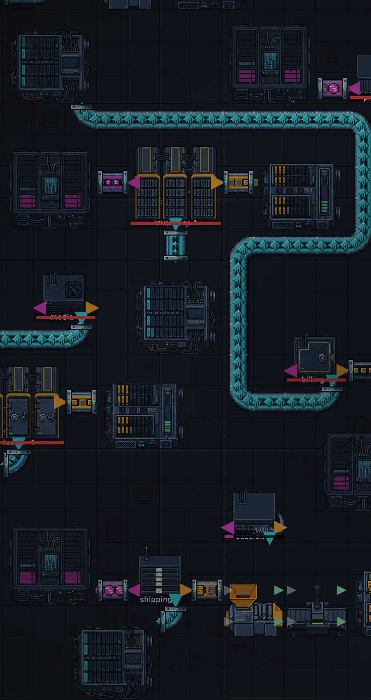

Things I've shipped Collection 2026
A factory game about observability. Carry logs, metrics and traces into storage while the company grows until it breaks.
Plays in the browser. Hold a phone sideways.

Obsorio
Look 01obsor.ioTypeScriptBrowser gameLive
A reader for the open web, organised by topic rather than by source. Hacker News, Lobsters, Bluesky, Lemmy, Mastodon and publishers' feeds in one place. No accounts, no tracking, works offline.
PaperWing
Look 02paperwing.ioTypeScript PWAApache-2.0Live
Line and branch coverage for Helm chart templates, measured from your helm-unittest suites. It finds the conditionals and loops your tests never reach. Started here; now maintained in the ClickHouse org.
$ helmcov --chart charts/my-app --verbose
templates/service.yaml:12 {{- if .Values.tls }} (if:true)
Helmcov
Look 03github.com/ClickHouse/helmcovGoNow in the ClickHouse org